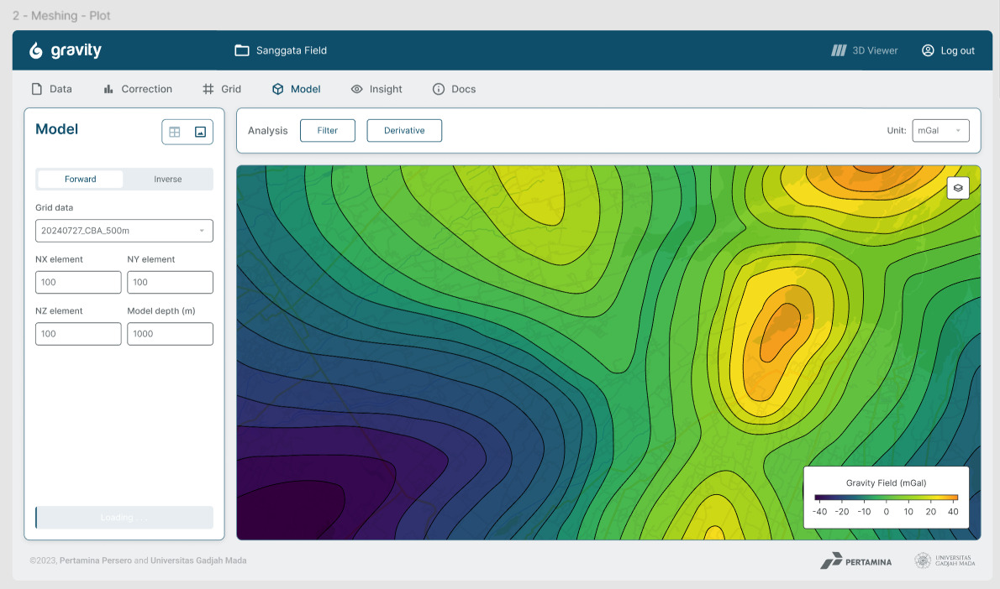
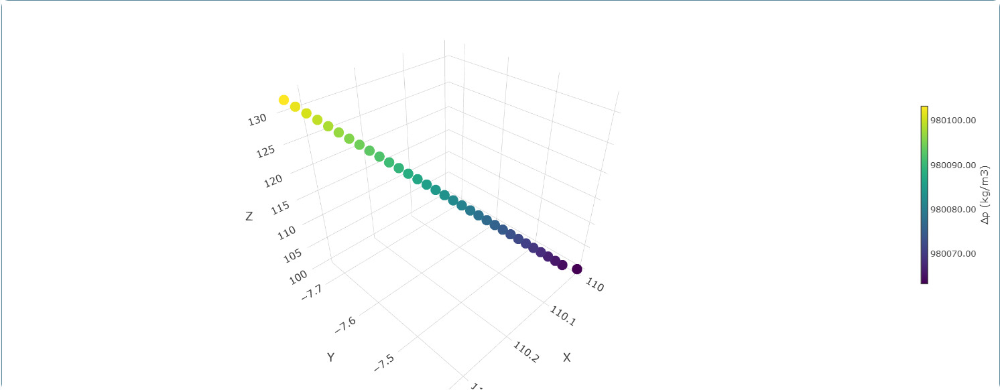
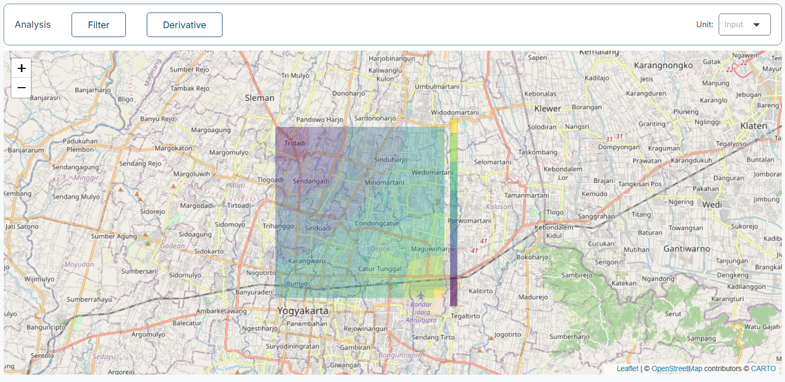

Work Experience
Software Engineer
Geoseismal Research Center
Yogyakarta, Indonesia
Research group under UGM's Geophysics Laboratory, focusing on energy and disaster management in collaboration with Pertamina, BMKG, and international institutes.



- Geophysical Data Modeling: Developed comprehensive geophysical data models, including processing magnetic datasets using SP-ERT Modelling Software
- Front-End Optimization: Designed and optimized interactive front-end components for geophysical web applications (Pertagamant2)
- System Integration: Collaborated with backend engineers to integrate Python-based APIs for geophysical and earthquake datasets
- Geospatial Mapping: Managed earthquake datasets and performed geophysical result overlays on digital maps
Enterprise Back-end Intern
PT. Cronos Solusi Bisnis
Yogyakarta, Indonesia
Enterprise software company providing tailored digital solutions to optimize business operations and efficiency.


- Back-End Architecture: Developed enterprise-grade back-end using Python (Flask) and MariaDB
- Database Design: Designed relational database schemas for user roles, permissions, and workflows
- Security: Implemented JWT authentication for secure access and session management
- Automation: Developed automated email response features
Project Intern
Indonesian Agency for Meteorology, Climatology, and Geophysics (BMKG)
Yogyakarta, Indonesia
Tsunami Ready Community Initiative
Facilitated the preparation of targeted villages in the DIY province to achieve "Tsunami Ready Community" certification by aligning local protocols with 12 IOC-UNESCO indicators, directly enhancing community resilience and disaster preparedness.